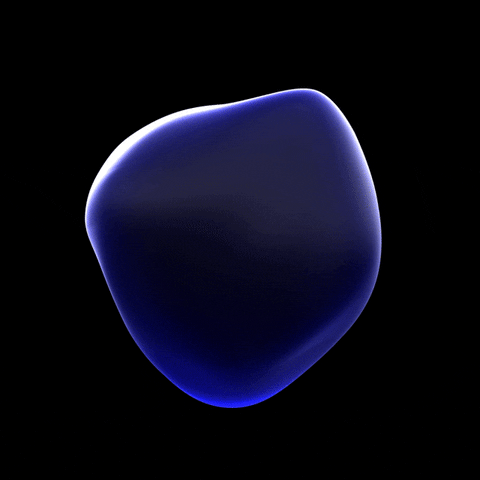

L'une des découvertes les plus marquantes est la « mémoire de l'eau », selon laquelle l'eau conserve
l'effet des substances qui y sont dissoutes, comme l'a souligné le scientifique français Jacques
Ben-Veniste.
Ben Veniste a mené des expériences sur des cellules immunitaires en utilisant de l'eau diluée
jusqu'à ce qu'il n'y ait aucune trace de la substance d'origine. Il a observé que l’eau affectait
toujours les cellules comme si la substance était présente, soulevant des questions sur la « mémoire
de l’eau ».
Ce concept fait référence à la capacité de l'eau à conserver l'effet des substances qui y sont
dissoutes, même après qu'elles aient été fortement diluées. L'homéopathie est basée sur ce principe,
selon lequel l'eau conserve les propriétés des substances qu'elle contient, ce qui contribue à
renforcer l'immunité.
Le Dr Masaru Emoto a également montré que l'eau est affectée par les émotions et les intentions, car
les cristaux d'eau présentaient une belle forme lorsqu'ils étaient exposés à des pensées positives,
alors qu'ils étaient irréguliers avec des pensées négatives.
Les érudits musulmans connaissent ces propriétés depuis 1 400 ans, la lecture du Coran étant
considérée comme une guérison, ce qui confirme l’effet du son sur l’eau.
Quant à l'énergie de l'eau, des études ont été menées sur l'effet de différentes énergies sur elle,
et il a été constaté que l'eau peut modifier sa structure, ce qui affecte sa santé et ses bienfaits.
L’eau de source possède des molécules naturellement disposées, ce qui la rend plus bénéfique pour la
santé que l’eau traitée.
### Géométrie sacrée et structure de l'eau
La géométrie sacrée fait référence à l'ordre établi par Dieu dans la création, où l'eau est
influencée par des motifs géométriques naturels. Sa structure moléculaire unique reflète ces motifs,
faisant interagir l'eau avec des fréquences et des formes géométriques, comme la Fleur de Vie, qui
présentent des motifs harmonieux similaires à la nature.
Le scientifique Emoto a montré que l'eau possède une mémoire qui répond à l'énergie générée par les
formes géométriques, ce qui affecte l'organisation de ses molécules. La composition physique de
l’eau a été créée sans goût ni odeur, permettant à chaque créature de ressentir des saveurs et des
parfums différents.
Dieu a également créé l’eau chez l’homme comme étant fraîche, salée pour les yeux et amère pour les
oreilles, donnant à chacune d’elles des fonctions spéciales. Ces bénédictions nécessitent de la
gratitude envers Dieu, à travers l’adoration et la gratitude.
